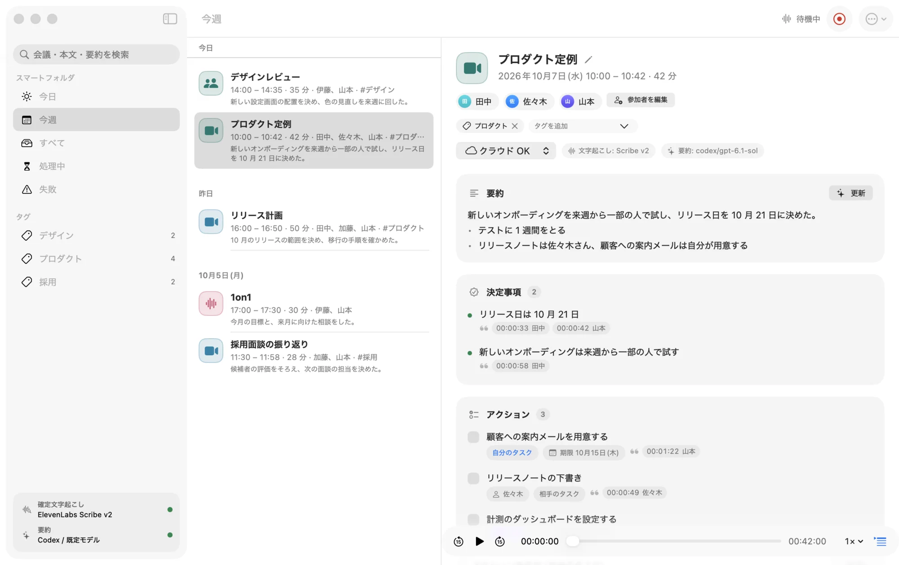
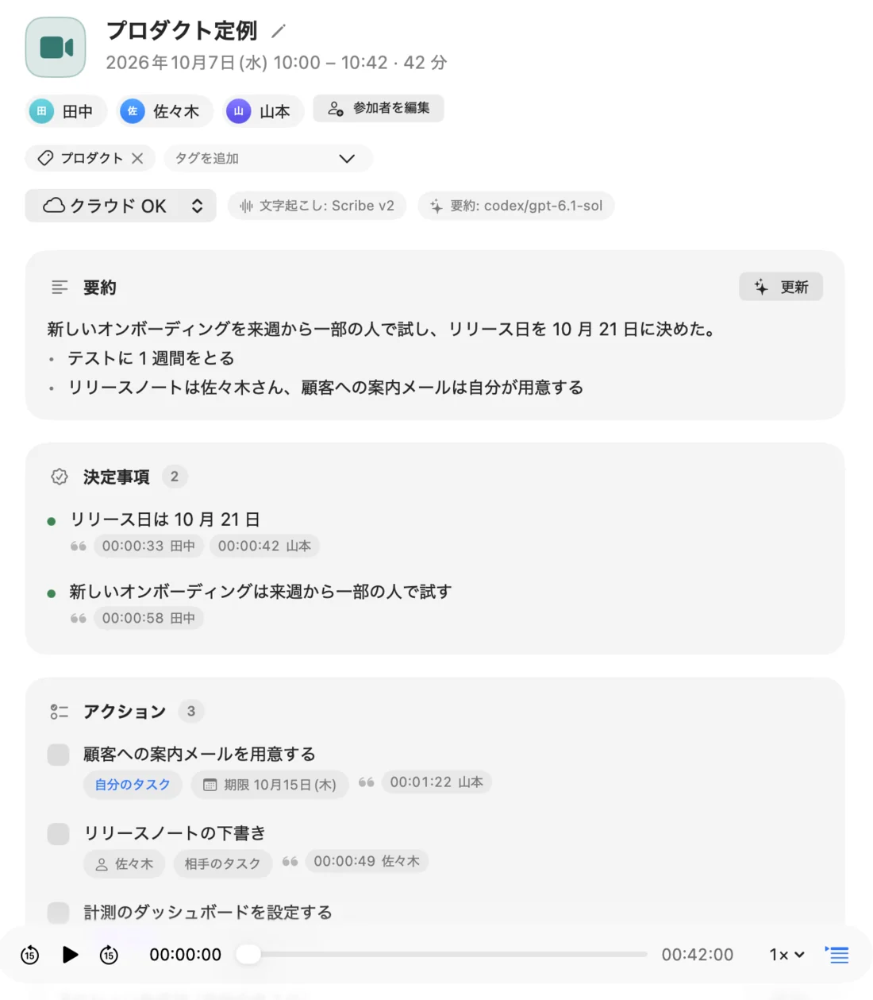
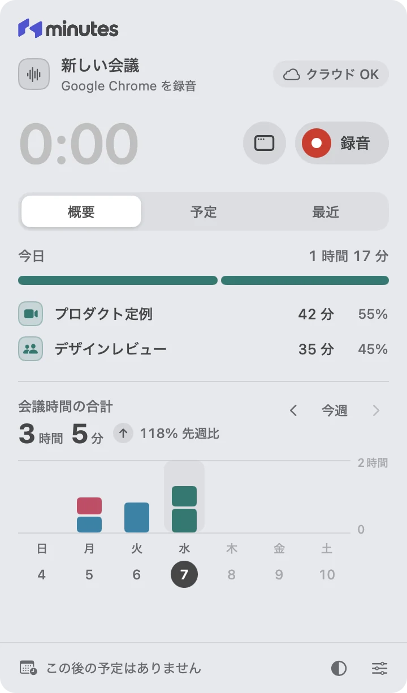
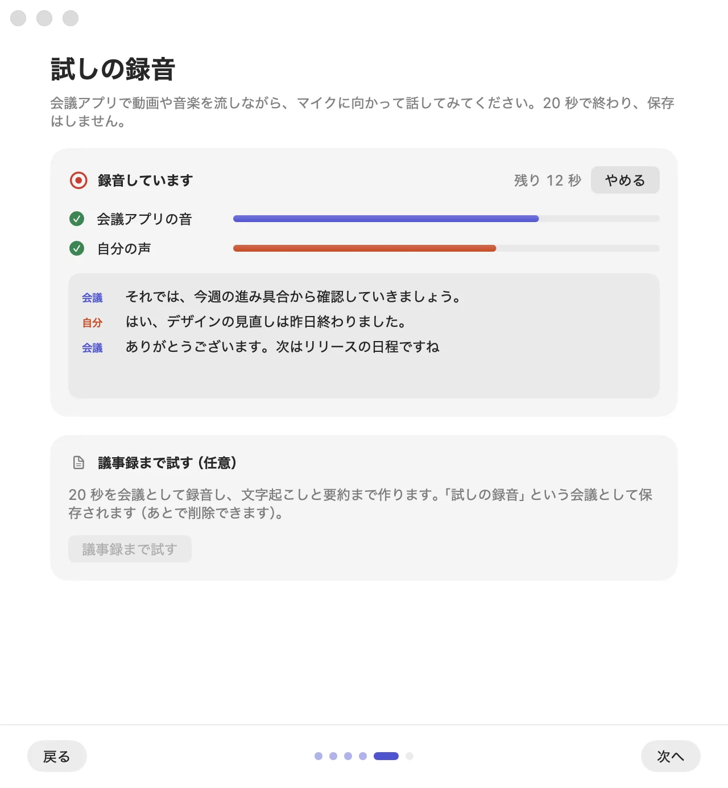

声を分けて録音。Meet・Teams・Zoom などの会議アプリの音と、マイクの自分の声を別々に録ります。誰が話したかを分けやすくなります。
Mac の議事録アプリ
会議は、
話すことに集中しよう。
Minutes は、Mac で会議を録音して、話者付きの文字起こし・要約・決定事項・アクションまでまとめる議事録アプリです。録音とライブ字幕は、この Mac の中で行います。
無料・オープンソース ・ macOS 26 以降 ・ Apple Silicon

15 秒の紹介
Mac で、録音するだけ。
できること
議事録は、Minutes が書く。
会議アプリの音と自分の声を録り、会議が終わったら、選んだサービスで文字起こしと要約を作ります。メニューバーに常駐して、会議を待ちます。
ライブ字幕。録音中の字幕は、この Mac の中（macOS の音声認識）で作ります。
要約も、決定事項も、アクションも。
文字起こしと要約。会議が終わると、話者付きの文字起こし・要約・決定事項・アクション・未決の論点を作ります。どれも根拠の発言へ戻れます。
- 要約
- 決定事項
- アクション
- 未決の論点
- 話者付きの文字起こし

話者の名前。一度選べば、同じ話者の発言すべてに名前が付きます。相手のマイクが拾った周りの会話は、話者ごとに外せます。
検索と書き出し。タイトル・参加者・本文・要約を全文検索。会議ごとに Markdown と JSON で書き出し、好きなフォルダへ。
予定の会議は自動で。カレンダーの予定の時刻に会議アプリから音がすると、録音するかを確かめてから始めます。
画面
メニューバーから、議事録まで。
録音の開始・停止と今日の予定はメニューバーのパネルから。議事録はウィンドウで読み、編集し、探せます。


画面の会議と名前は架空です。
送信先
どこへ送るかは、会議ごとに決める。
会議ごとに「クラウド OK」か「ローカルのみ」を選べます。音声と議事録は、この Mac に保存します。
クラウド OK
選んだサービスへ送る
- 録音した音声
- 会議のあと、選んだ文字起こしのサービス（ElevenLabs / OpenAI）へ送ります。精度を上げるため、参加者の名前と用語も送ります。
- 文字起こし・会議名・参加者
- 選んだ要約の手段へ送ります（Codex は OpenAI、Claude Code と Anthropic API は Anthropic）。
- 書き出し・同期
- 選んだフォルダへコピーします。
ローカルのみ
この Mac から出さない
- 録音した音声
- 送りません。この Mac の中で文字起こしします。
- 文字起こし・会議名・参加者
- 送りません。要約は作りません。
- 書き出し・同期
- しません。
- ライブ字幕は、いつもこの Mac の中で作ります。
- 利用状況の送信（テレメトリ）はしません。このページも解析のスクリプトを読み込みません。
- API キーは Keychain に保存します。
- 新しい版の確認のため、1 日に 1 回 GitHub から更新の情報を読みます（設定で止められます）。
- 初めて使うときに、macOS の音声認識モデル（Apple）と、話者分離のモデル（Hugging Face）をダウンロードします。
- 音声は既定で 30 日後に削除します（書き出しが済んだ会議だけ）。文字起こしと議事録は残ります。
録音することを参加者に伝え、必要な同意を得るのは、Minutes を使う人の責任です。法律と、所属する組織のルールに従ってください。参加者に知らせる文面は、アプリからいつでもコピーできます。
はじめる前に
使うのに必要なもの
Mac
- Apple Silicon の Mac
- macOS 26 以降
- アプリの画面は日本語です。
文字起こし（どれか 1 つ）
- ElevenLabs Scribe v2（おすすめ・API キー）
- OpenAI（API キー）
- この Mac の中（キー不要・精度は下がる）
要約（どれか 1 つ）
- Codex（ChatGPT のログイン）
- Claude Code（Claude のログイン）
- Anthropic API（API キー）
- 要約しない
待機リスト
キーなしで使える版を、準備しています。
API キーやログインを用意しなくても、文字起こしと要約まで使える有料の版を考えています。関心があれば、待機リストに登録してください。準備ができたらお知らせします。
待機リストに登録する登録は外部のフォームで受け付けます。メールアドレスは、この版の案内のためだけに使います。